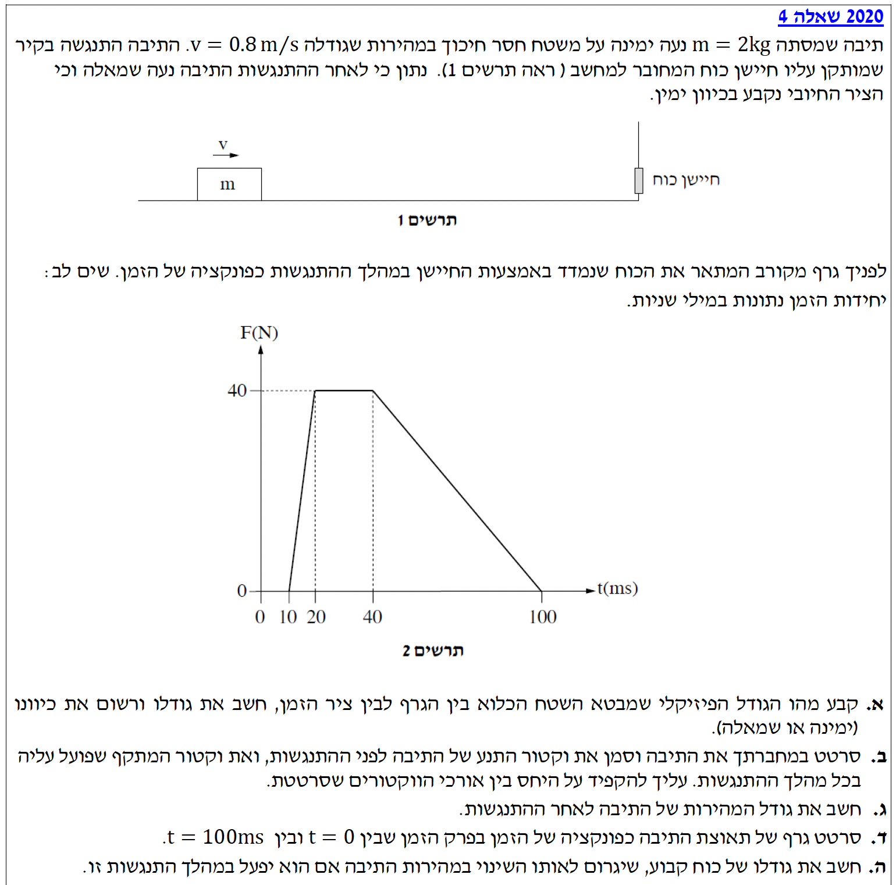
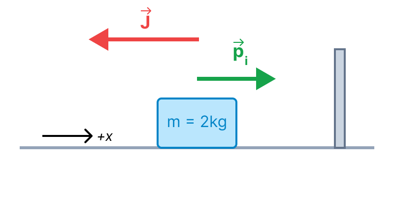
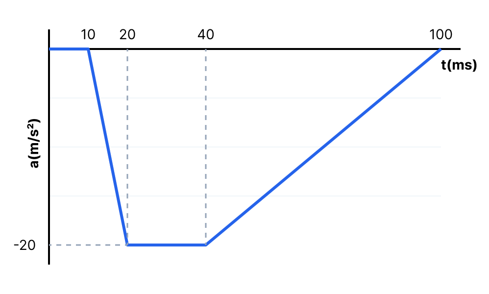

שלום תלמידים יקרים! בשאלה זו אנו חוקרים התנגשות של תיבה בחיישן כוח, המחובר לקיר.
אנו נשתמש בכלים של מתקף ותנע, וניעזר בגרף כוח-זמן כדי לנתח את התנועה. שימו לב להגדרות הכיוונים החיוביים ולמשמעות הפיזיקלית של כל גודל. בואו נתחיל!

[תמונת השאלה המקורית]לא נמצאה תמונה בשם question-image.png באותה תיקייה.
סעיף א' - ניתוח הגרף והמתקף
מה נתון:
נתון לנו גרף של כוח כפונקציה של הזמן, \( F(t) \). ציר הזמן נתון במילי-שניות (ms). שלב 0 - המרת יחידות (MKS): עלינו לעבוד ביחידות תקניות (שניות). נזכור כי מילי-שנייה היא אלפית השנייה:
\( 1 \text{ ms} = 10^{-3} \text{ s} \).
נתון כי התיבה נעה ימינה (הכיוון החיובי) ומתנגשת בחיישן. הקיר נמצא מימין לתיבה.
מה מחפשים:
לקבוע מהו הגודל הפיזיקלי המבוטא על ידי השטח הכלוא בין הגרף לבין ציר הזמן, ולחשב את גודלו.
השטח הכלוא מתחת לגרף כוח-זמן מייצג את המתקף (Impulse) שהפעיל הכוח במהלך פרק הזמן הנתון. מכיוון שהגרף מתאר את קריאת החיישן, השטח מבטא את המתקף שהפעילה התיבה על החיישן.
פתרון צעד-אחר-צעד:
הגודל הפיזיקלי הוא המתקף. כדי לחשב את גודלו, נחשב את שטח הטרפז הכלוא בין הגרף לציר הזמן (נזכור להמיר יחידות זמן!).
נוסחת שטח טרפז היא סכום הבסיסים כפול הגובה חלקי 2.
הבסיס הגדול הוא פרק הזמן הכולל של ההתנגשות (מ-\(t=10\) עד \(t=100\)):
מכיוון שהכוח בגרף חיובי, השטח (והמתקף המחושב) הוא חיובי ומייצג את המתקף שפעל על החיישן עצמו.
הגודל הפיזיקלי הוא המתקף (של הכוח שפעל על החיישן).
גודלו: \( 2.20 \text{ N}\cdot\text{s} \).
טיפ מורה: שימו לב! הגרף מראה את קריאת החיישן, כלומר את הכוח שהתיבה מפעילה על החיישן בכיוון החיובי (ימינה), ולכן השטח חיובי. לקראת הסעיפים הבאים נצטרך להשתמש בחוק השלישי של ניוטון כדי להבין שהמתקף שפועל על התיבה זהה בגודלו אך הפוך בכיוונו (שלילי/שמאלה).
סעיף ב' - שרטוט וקטורים
מה נתון:
מסת התיבה \( m = 2 \text{ kg} \).
המהירות ההתחלתית (לפני ההתנגשות) היא ימינה (כיוון חיובי): \( \vec{v}_i = +0.8 \text{ m/s} \).
חישבנו בסעיף א' שהמתקף שהופעל על החיישן הוא \( 2.2 \text{ N}\cdot\text{s} \) בכיוון ימינה (חיובי).
מה מחפשים:
לשרטט את התיבה, לסמן את וקטור התנע של התיבה לפני ההתנגשות, ואת וקטור המתקף שפועל עליה במהלך ההתנגשות, תוך הקפדה על יחס אורכים איכותי (מי ארוך יותר).
על פי החוק השלישי של ניוטון (פעולה ותגובה), הכוח שהחיישן מפעיל על התיבה שווה בגודלו והפוך בכיוונו לכוח שהתיבה מפעילה על החיישן, ולכן גם המתקף הכולל ביניהם מקיים קשר זה.
גודל התנע לעומת גודל המתקף יקבעו את אורך החיצים בשרטוט (למרות שאלו יחידות שונות, הכוונה היא להשוות את הערכים המספריים ב-MKS).
חישוב ושרטוט:
שלב 1: כיוון וגודל המתקף על התיבה
בסעיף א' מצאנו שהמתקף על החיישן הוא \( 2.2 \text{ N}\cdot\text{s} \) ימינה. לפי החוק השלישי של ניוטון, החיישן מפעיל מתקף על התיבה שגודלו זהה (\( 2.2 \text{ N}\cdot\text{s} \)) אך כיוונו הפוך - שמאלה.
שלב 2: חישוב תנע התחלתי
נחשב את גודל התנע של התיבה לפני ההתנגשות:
כיוון התנע הוא ככיוון המהירות - ימינה.
מכיוון שגודל המתקף (\( 2.2 \)) גדול מגודל התנע ההתחלתי (\( 1.6 \)), נצייר את חץ המתקף שמאלה ארוך יותר מחץ התנע ימינה.

ראו שרטוט מעלה. וקטור המתקף (אדום) פונה שמאלה וארוך יותר מווקטור התנע ההתחלתי (ירוק) הפונה ימינה.
טיפ מורה: הקפדה על ציור פרופורציונלי בבחינת הבגרות מראה לבוחן שאתם מבינים את המשמעות הפיזיקלית של המספרים שחישבתם. מתקף גדול מהתנע ההתחלתי (בכיוון מנוגד) אומר לנו דבר חשוב לקראת הסעיף הבא: התיבה לא רק תעצור, אלא תשנה את כיוון תנועתה!
סעיף ג' - חישוב מהירות לאחר ההתנגשות
מה נתון:
תנע התחלתי: \( p_i = +1.6 \text{ kg}\cdot\text{m/s} \) (על ציר ה-\(x\)).
מתקף שהופעל: \( J = -2.2 \text{ N}\cdot\text{s} \) (הצבנו במינוס מכיוון שכיוונו מנוגד לציר ה-\(x\) החיובי).
מסת התיבה: \( m = 2 \text{ kg} \).
מה מחפשים:
את גודל המהירות של התיבה לאחר ההתנגשות, כלומר את הערך המוחלט של \( v_f \).
הסימן השלילי מציין שכיוון המהירות הוא שמאלה. השאלה ביקשה את גודל המהירות, לכן ניקח את הערך המוחלט:
\[ |v_f| = |-0.3| = 0.3 \text{ m/s} \]
גודל המהירות של התיבה לאחר ההתנגשות הוא \( 0.300 \text{ m/s} \).
טיפ מורה (אזהרת סימנים): מלכודת נפוצה היא להציב את המתקף כחיובי, ואז לקבל \( 2.2 = 2v_f - 1.6 \Rightarrow v_f = 1.9 \text{ m/s} \). זה אבסורד פיזיקלי! קיר שמתנגשים בו לא יאיץ אותנו קדימה לתוך הקיר אלא יהדוף אותנו לאחור. תמיד זכרו: וקטורים הופכים למספרים חיוביים/שליליים בהתאם למערכת הצירים שבחרתם!
סעיף ד' - גרף תאוצה זמן
מה נתון:
הכוח הפועל על התיבה מתואר על ידי הגרף המקורי, אך כפי שהבנו, כיוונו שלילי ולכן הערכים עבור התיבה הם במינוס (בין \(0\) ל-\(-40\text{ N}\)).
מסת התיבה \( m = 2 \text{ kg} \).
מה מחפשים:
לשרטט גרף של תאוצת התיבה כפונקציה של הזמן בפרק הזמן מ-\(t=0\) ועד \(t=100\text{ ms}\).
כיוון שקיים רק כוח אופקי אחד (כוח החיישן), משוואת הכוחות היא פשוט \( F_x = m a_x \), ולכן התאוצה בכל רגע שווה לכוח חלקי המסה: \( a(t) = \frac{F_x(t)}{m} \). צורת גרף התאוצה תהיה זהה לחלוטין לצורת גרף הכוח, רק מכווצת פי שתיים (חלוקה במסה \(m=2\)) והפוכה בסימן (כי הכוח על התיבה פועל שמאלה).
חישוב ושרטוט:
נחשב את ערכי התאוצה בצמתי הזמן העיקריים:
1. בפרק הזמן \( t = 0 \rightarrow 10 \text{ ms} \): הכוח הוא אפס, ולכן התאוצה היא \( a = 0 \).
2. בזמן \( t = 20 \text{ ms} \): הכוח המרבי מגיע ל-\(-40\text{ N}\) (שלילי כי זה שמאלה). התאוצה היא:
3. בין \( t = 20 \rightarrow 40 \text{ ms} \): הכוח קבוע, ולכן התאוצה קבועה על \( -20 \text{ m/s}^2 \).
4. בזמן \( t = 100 \text{ ms} \): הכוח חוזר לאפס, ולכן גם התאוצה עולה חזרה ל-\( 0 \).

הגרף המשורטט מעלה מציג את תאוצת התיבה. שימו לב שהתאוצה היא שלילית משום שהכוח השקול פועל בכיוון המנוגד לציר החיובי.
טיפ מורה (בדיקה עצמית): אנו יודעים ששטח מתחת לגרף תאוצה-זמן שווה לשינוי במהירות (\( \Delta v \)). בואו נבדוק את עצמנו! שטח הטרפז שיצרנו בגרף (נמיר זמנים לשניות): \( \frac{(0.09 + 0.02) \cdot (-20)}{2} = \frac{0.11}{2} \cdot (-20) = -1.1 \text{ m/s} \). האם זה מתאים? המהירות ההתחלתית הייתה \(0.8\) והסופית \(-0.3\). השינוי הוא \( -0.3 - 0.8 = -1.1 \text{ m/s} \). הבדיקה מוכיחה שהפתרון שלנו מדויק ועקבי לחלוטין!
סעיף ה' - כוח ממוצע
מה נתון:
המתקף הכולל שחישבנו: \( J = -2.2 \text{ N}\cdot\text{s} \).
משך זמן ההתנגשות הכולל: מ-\(t=10\) ועד \(t=100\) מילי-שניות. נחשב את פרק הזמן:
הסימן השלילי מציין שהכוח פועל שמאלה. מכיוון שהשאלה ביקשה במפורש את גודלו של הכוח, ניקח שוב ערך מוחלט ונעגל ל-3 ספרות מהותיות כנדרש.
גודלו של הכוח הקבוע הוא \( 24.4 \text{ N} \).
טיפ מורה לסיכום: מה המשמעות הגרפית של תוצאה זו? אם היינו משרטטים מלבן שרוחבו הוא זמן ההתנגשות (\(90\text{ ms}\)) וגובהו הוא הכוח הממוצע (\(24.44\text{ N}\)), שטחו של מלבן זה היה בדיוק שווה לשטחו של הטרפז המקורי שחישבנו בסעיף א'. זהו רעיון חשוב בפיזיקה שעוזר לנו לפשט מודלים מסובכים (כוח משתנה) למודלים פשוטים (כוח קבוע שווה-ערך).
נוסח השאלה המקורית
[תמונת השאלה המקורית]לא נמצאה תמונה בשם question-image.png.